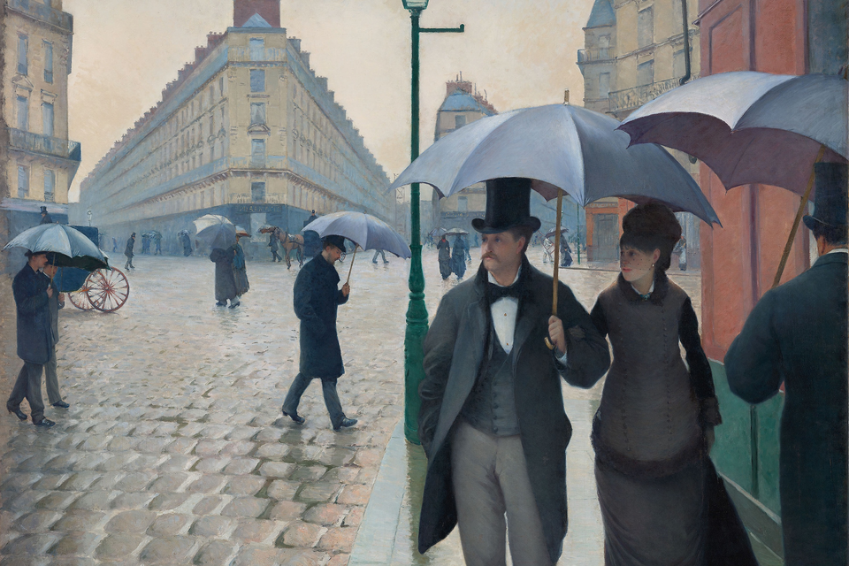
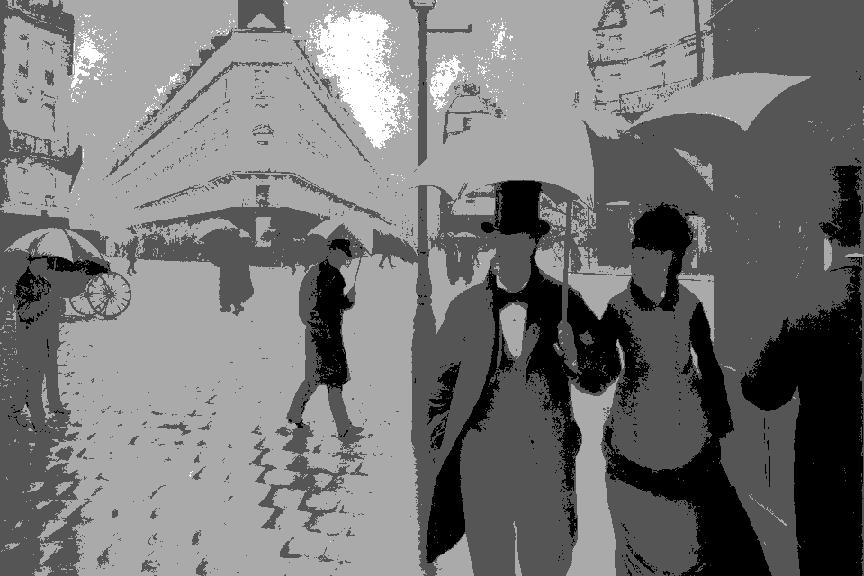
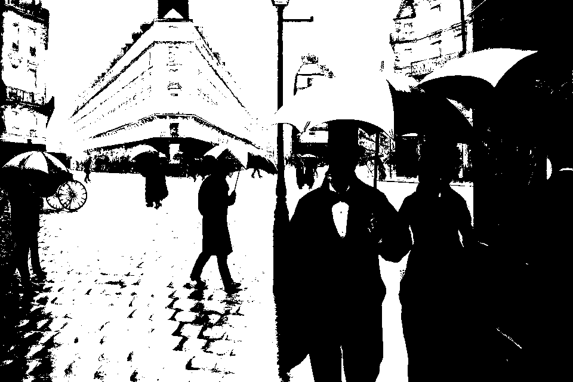
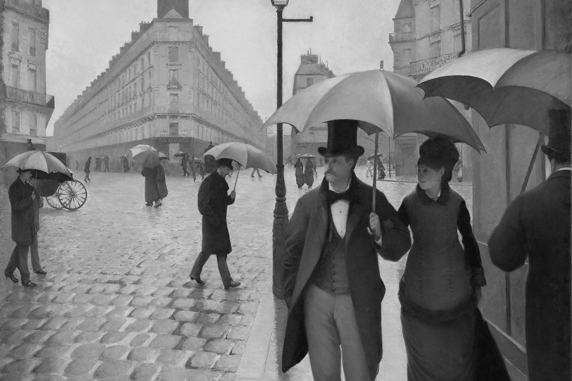
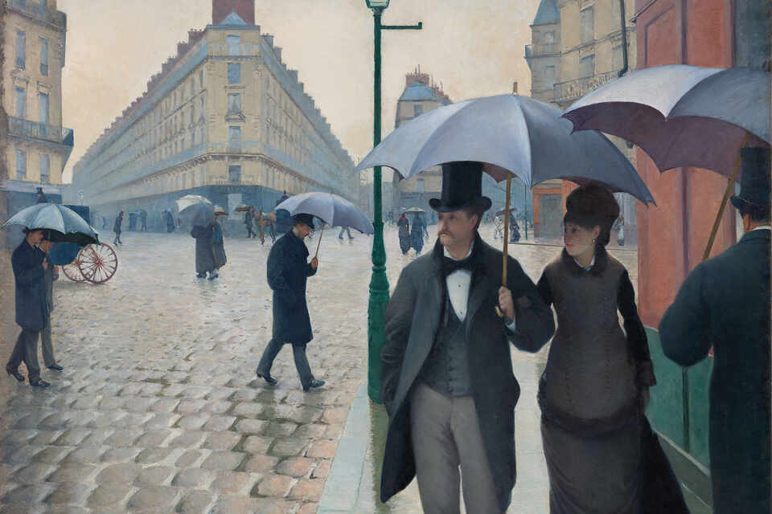
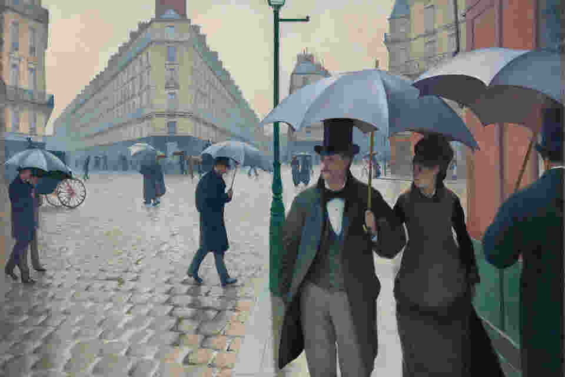
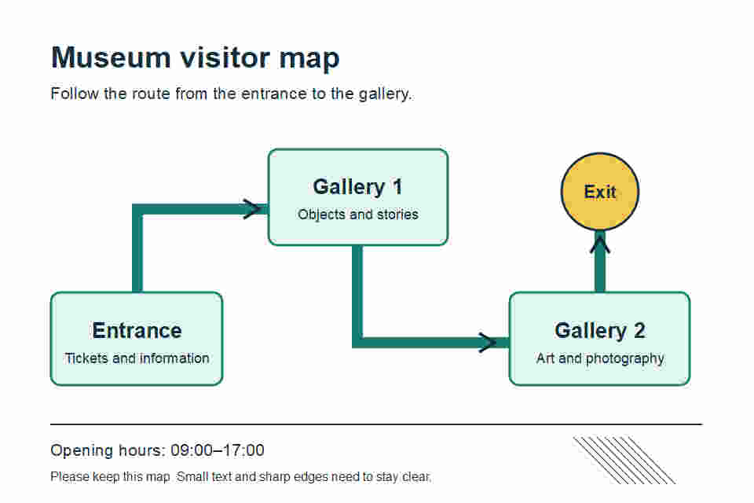

Resolution, depth and compression
Which image data can we change, and what do we gain or lose?
- Explain image detail and colour precision
- Calculate raw pixel storage
- Justify compression choices
Image representation
One artwork image. Two different jobs.
An art museum needs a small web preview and a detailed exhibit poster. Which image data can we change, and what might we lose?

Gustave Caillebotte, Paris Street; Rainy Day (1877), Art Institute of Chicago · CC0. Cropped/resized; greyscale or recompressed where shown.
Image representation
Read the grid before counting the bits
Each position is one pixel. A bitmap stores a value for each position, using an agreed colour interpretation.
What do you count?
8 × 4 = 32pixel positions
The dimensions multiply. Adding 8 + 4 does not count the grid.
If you repaint every pixel, does this grid gain more positions?
No. Its values change, but it still has 32 pixel positions.
Resolution
How many samples describe the image?
Image representation
More samples can capture finer detail
These are fresh samples of the same scene. The display size stays fixed; only the stored grid changes.
Look at the narrow door
More samples distinguish the narrow door and the roof edge.
Fixed: subject, display size and colour precision.
Compare without the controls
Image representation
A bigger view is still the same stored grid
Zoom makes the existing pixels larger on screen. It cannot recover the door that the original 8 × 8 grid never recorded.
View ×1 · stored image still 8 × 8 (64 pixels)
Resampling
Creates a new pixel grid from existing samples. Enlargement estimates new values; it does not recover the original missing detail.
Image representation
Double the width and height: four times the pixels
Count the positions first. These four blocks divide one larger grid; they are not four copies of the picture.
8 × 8
648 × 8
648 × 8
648 × 8
64
648 × 8
648 × 8
648 × 8
64
One 16 × 16 image
16 × 16 = 256four times 8 × 8 = 64
Image representation
The same pixels can cover different print sizes
Pixel dimensions count samples. Pixels per inch (PPI) describes how tightly those samples are placed when printing.
1200 × 800
300 PPI
300 PPI
1200 × 800
150 PPI
150 PPI
Resampling is OFF: both still contain 960,000 pixels.
Print calculation and terminology
Print width in inches = width in pixels ÷ PPI. 1200 ÷ 300 = 4 inches; 1200 ÷ 150 = 8 inches. Changing only this density setting adds no image samples. Printer dots per inch (DPI) describes printer dots; it is not simply another name for image pixel count.
Bit depth
How many values can each pixel represent?
Image representation
More bits give a pixel more possible codes
Start with a single greyscale value per pixel. Every extra bit doubles the number of choices.
1 bit per pixel
012 bits per pixel
000110113 bits per pixel
000001010011100101110111Possible codes = 2ᵇb = the number of bits in this value
Image representation
Keep the pixels. Change the available shades.
Every setting uses the same pixels. Watch for jumps between tones: banding.

2 bits per pixel · 4 possible shades
Few shades make distinct bands.
Each choice starts again from the reference; it does not recover a previously saved low-depth copy.
Static comparison and model limits


The gradient contains 256 sample positions. The artwork image is a quantised teaching preview stored as a PNG; its actual file bytes are not the ideal packed bit-depth total. Displayed RGB grey values map the stored teaching code onto a 0–255 brightness scale.
Gustave Caillebotte, Paris Street; Rainy Day (1877), Art Institute of Chicago · CC0. Cropped/resized; greyscale or recompressed where shown.
Image representation
One RGB pixel holds three channel values
Red, green and blue describe the colour together. “8-bit colour” is ambiguous unless we say whether it means each channel or the whole pixel.
One pixel
Red: 200
110010008 bitsGreen: 120
011110008 bitsBlue: 64
010000008 bits8 + 8 + 8 = 24 bits per pixel256 × 256 × 256 = 16,777,216 possible RGB combinations
No transparency channel is included in this example.
Image representation
Label what the depth measures
The same number of bits can describe different things. A palette index selects a colour from a separate table.
8-bit greyscale
256possible shades
One 8-bit grey value per pixel.
8-bit indexed colour
256possible palette entries
One 8-bit index per pixel. The palette also needs storage.
RGB: 8 bits per channel
24bits per pixel
Three values: red, green and blue.
Does every image described as “8-bit” have only 256 possible colours?
No. RGB with eight bits per channel has 24 bits per pixel. Ask what the depth measures.
Sample depth in real formats
PNG defines depth per sample for greyscale/RGB images, or per palette index for indexed images. Always identify the representation before calculating bits per pixel.
Storage
How much uncompressed pixel data is there?
Image representation
Calculate the raw storage for an RGB image
A 1200 × 800 photograph uses 24-bit RGB without transparency. Multiply its pixel count by the bits per pixel, then convert to bytes. This counts uncompressed pixel data only.
Count pixels
1200 × 800 = 960,000 pixelswidth × height
Multiply by the bits per pixel
960,000 × 24 = 23,040,000 bitsall three RGB channels are included
Convert bits to bytes
23,040,000 ÷ 8 = 2,880,000 bytesdivide by eight, not by 1000
Use the stated unit convention
2,880,000 ÷ 1,000,000 = 2.88 MBdecimal MB: one million bytes
The storage formula
width × height × bits per pixel ÷ 8uncompressed pixel data in bytes; headers and other file data are excluded
Image representation
Predict the change before calculating
Halve width and height
1200 × 800 → 600 × 400. Keep 24 bits per pixel.
Half or one quarter of the raw data?
One quarter: 600 × 400 × 24 ÷ 8 = 720,000 bytes, compared with 2,880,000 bytes.
Halve the bits per pixel
Keep 1200 × 800 pixels. Change 8-bit greyscale to 4-bit greyscale.
What changes, and what stays fixed?
Raw data halves from 960,000 to 480,000 bytes. Pixel count is unchanged; the available shades fall from 256 to 16.
Change one property at a time so its effect is clear.
Image representation
Raw pixel payload is only part of the story
An image file also tells a decoder how to interpret its data. Its pixel values may be compressed.
Header / metadataDimensions and interpretation
Palette, if usedEntries selected by pixel codes
Encoded pixel dataMay use compression
Conceptual file diagram; real formats arrange their contents differently.
Exit check: 100 × 80 at 8 bits per pixel. How many raw bytes?
100 × 80 × 8 = 64,000 bits = 8,000 bytes. This excludes compression and extra file data; it is not a prediction of the final PNG or JPEG file size.
Part 2 · Compression
Keep the same image dimensions. Investigate the stored data.
Image representation
Smaller files: what happens to the picture?
Compression aims to reduce the bytes needed for storage or transfer. When the file is opened, it is decoded back into pixel values.
Lossless
A more efficient description preserves every value.
Encode→
Compressed file
Decode→
Lossy
Some information is discarded to reduce the data.
Encode→
Compressed file
Decode→
Illustration of the difference: both results have the same pixel dimensions. Visible changes depend on the image and compression settings.
Image representation
A short description can preserve every value
Store a count and a shade for each run of equal values. PNG uses a different method.
Original pixel values
Original: 16 pixels, 8 bits each
00000000255255255255255255255255
2 runs of equal neighbouring shades
Count × shade
8 × 08 × 255
Decoded
00000000255255255255255255255255
All 16 values match exactly.
Does this method always save space?
Pixel values: 16 bytes. Count/value pairs: 4 bytes. Headers excluded.
Here each count uses one byte and each shade uses one byte. A row of 16 alternating shades needs 16 pairs: 32 bytes. Exact reconstruction is guaranteed by this scheme; a smaller result is not.
Image representation
A smaller file can change the decoded picture
Compare real encoded files from the same reference. Their dimensions stay fixed. Inspect the full image and the matching enlarged crop.

Same magnified cropArtwork image · 960 × 640 in both files · compare the same edge or texture.
Reference and strong-compression examples without controls

Gustave Caillebotte, Paris Street; Rainy Day (1877), Art Institute of Chicago · CC0. Cropped/resized; greyscale or recompressed where shown.
Image representation
The image content affects the result
Photographs and digitised paintings have gradual tones and textures. Diagrams often have flat areas, fine lines and text. Compare the actual results before choosing.
Artwork image
Lossy encoding can save substantial space, but texture and edges can change.
Diagram with small text

Changes around letters and lines can be distracting. Lossless encoding preserves the supplied values.
Measured example file sizes
| Example | Reference PNG | JPEG high | JPEG medium | JPEG low |
|---|---|---|---|---|
| Artwork image | 995,015 B | 193,693 B | 57,070 B | 15,989 B |
| Diagram | 32,353 B | 91,400 B | 39,389 B | 17,503 B |
All examples are 960 × 640. These are measured file bytes, not predictions for other images. The reference is the supplied pixel data, not a promise of untouched camera data.
PNG specifies lossless raster encoding. This lesson uses the common lossy JPEG mode; the JPEG family also includes other modes.
Gustave Caillebotte, Paris Street; Rainy Day (1877), Art Institute of Chicago · CC0. Cropped/resized; greyscale or recompressed where shown.
Image representation
Three different changes can reduce data
1200 × 800 → 600 × 4008-bit grey → 4-bit greySame dimensions can remainLossy compression can change reconstructed values without removing rows or columns. Lossless compression preserves the data given to it.
Can saving a damaged JPEG as PNG bring back discarded detail?
No. Lossless encoding preserves the values it receives. It cannot recover information discarded by an earlier operation.
Apply the ideas
Choose settings from the task, then justify the consequence.
Image representation
Keep a preservation copy. Make a preview.
A museum needs exact preservation of its supplied image data, plus a small web preview visitors can load quickly.
- Requirement
The preservation copy must retain every supplied pixel value.
- Choice and effect
Use lossless encoding for that copy. Derive a smaller preview separately.
- Judgement
Check the preview at its intended size. Reject settings that hide useful detail.
What changes the decision?
A preview containing small labels may need lossless encoding too. “Website” alone does not mean “use lossy”.
Image representation
A screenshot needs readable text
A technician must send a screenshot with small error messages. The receiver needs the supplied pixel values preserved exactly.
Show answer guidance
Keep adequate dimensions and use lossless encoding. Strong lossy compression may alter values around letter edges.
Image representation
A photographic gallery has a transfer budget
A travel gallery displays photos in small cards. The originals are much larger; visitors have limited mobile data. The source files remain safely stored.
Show answer guidance
Make appropriately sized preview copies and inspect a lossy setting. Balance transfer size with useful detail; do not overwrite the sources.
Image representation
A device icon uses exactly two values
A tiny status display accepts only black and white. Its icon has no grey anti-aliased edge pixels.
Show answer guidance
At the required dimensions, one bit per pixel represents the two values. More depth adds choices this icon does not use.
Image representation
Repair the missing condition
“300 PPI always creates more pixels.”
Only if pixel data is resampled as part of the change. Changing density metadata alone changes print size, not pixel count.
“8-bit means 256 colours in every image.”
Eight bits per channel is different from eight bits per pixel. RGB with three 8-bit channels uses 24 bits per pixel.
“All compression removes image detail.”
Lossless encoding reconstructs its input exactly. Lossy encoding discards distinctions; visible damage depends on the image and settings.
“Width × height × depth gives the JPEG file size.”
It gives raw pixel bits when depth means total bits per pixel. Extra file information and compression change the file size.
Image representation
Check the concepts
Answer all 12 questions, then check your score. Aim for 9 correct. Your choices save in this browser.
Image representation
Written practice 1: explain
Explain how reducing the bit depth of an image will affect the way the image data is stored and displayed.
Show answer guide
- For a fixed pixel count and representation, fewer bits are allocated per pixel.
- Fewer possible colours or shades can be represented.
- This can produce banding or remove subtle tone distinctions.
- The raw pixel payload becomes smaller; final file size also depends on encoding and other file data.
Drafts save in this browser. Guidance supports self-checking; it does not automatically award marks.
Image representation
Written practice 2: calculate
A 1200 × 800 RGB image uses 8 bits per channel and has no transparency. Calculate the uncompressed pixel payload in bytes and decimal MB. Exclude all other file data.
Show answer guide
- RGB has three channels: 8 + 8 + 8 = 24 bits per pixel.
- 1200 × 800 = 960,000 pixels. Multiply by 24 = 23,040,000 bits.
- Divide by 8 = 2,880,000 bytes. Divide by 1,000,000 = 2.88 MB.
- State that these are raw pixel values, not the encoded file size.
Drafts save in this browser. Guidance supports self-checking; it does not automatically award marks.
Image representation
Written practice 3: explain
An image is resampled from 1600 × 1200 to 800 × 600. Its bit depth stays the same. Explain the effect on raw storage and image detail.
Show answer guide
- Width and height each halve, so pixel count falls to one quarter.
- At the same bits per pixel, the raw pixel payload also falls to one quarter.
- Fewer samples may remove fine detail, especially when shown at the same large size.
- The smaller image can still be sufficient for a small display area; explain suitability in context.
Drafts save in this browser. Guidance supports self-checking; it does not automatically award marks.
Image representation
Written practice 4: compare
A source row is 0, 0, 90, 90, 255. Decoder A produces the same row. Decoder B produces 0, 0, 85, 85, 255. Compare what this shows about preservation, and explain what you cannot conclude from the rows alone.
Show answer guide
- A has reconstructed the supplied values exactly in this example.
- B has changed two values, so that result does not preserve the original row exactly.
- A single matching example cannot prove an arbitrary method is lossless for every input; lossless is a guarantee of the method.
- The rows alone do not reveal either file size, compression ratio or whether the visual difference matters for a task.
Drafts save in this browser. Guidance supports self-checking; it does not automatically award marks.
Image representation
Written practice 5: evaluate
A wildlife organisation needs an exact archive of supplied photographs and a fast-loading gallery of previews. Evaluate suitable image settings and compression choices for these two uses.
Show answer guide
- Keep original dimensions and values in the archive; lossless encoding supports exact reconstruction of the supplied data.
- Create separate preview copies at dimensions appropriate to their display area; downsampling reduces raw pixel count.
- Inspect suitable lossy compression for the photographic previews; lower transfer size can help the gallery, but useful detail must remain.
- If a preview contains important labels or fine detail, revise the settings or consider lossless encoding.
- Compare the consequences for both uses, and give a conditional judgement. Keep the archive separate from derived previews.
Drafts save in this browser. Guidance supports self-checking; it does not automatically award marks.